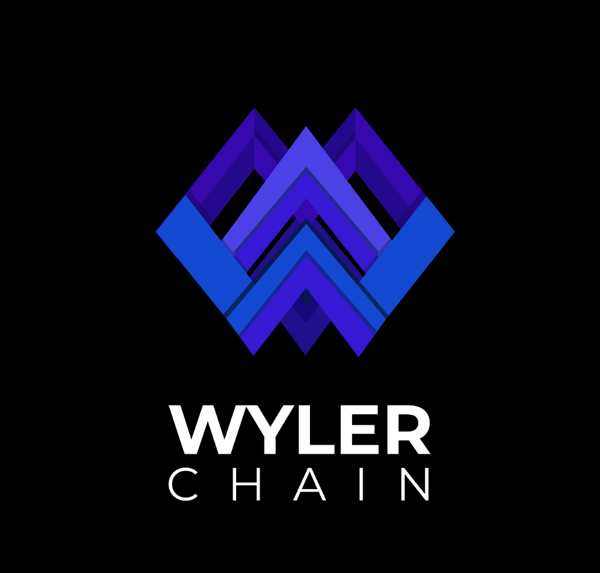

WylerChain Brand Kit
Everything you need to accurately represent the WylerChain brand. Use these assets for partnerships, media, and built-on-wyler applications.
Logos & Wordmarks

Primary Geometric Mark
The standalone 'W' geometric icon. Used for avatars, icons, and minimal representations.
Download PNG{kind=link}
Primary Glow Context
The signature glow asset for high-contrast dark backgrounds and hero sections.
Download PNG{kind=link}
Color Palette
WylerChain relies on a highly focused neon palette placed against abyssal dark backgrounds to ensure high contrast and a premium Web3 aesthetic.
Primary Indigo
#4F46E5
Wyler Violet
#5B2CFF
Accent Blue
#2563EB
Obsidian Surface
#0A0A0E
Typography
Headlines & Display
A proportional sans-serif typeface designed by Florian Karsten. It provides our brand with a technical, geometric, yet approachable identity. We use it strictly for headers, buttons, and high-impact navigational items.
Body Text & Data
Crafted & designed for computer screens. Inter provides maximum legibility for long-form paragraphs, technical documentation, transaction data, strings, and standard UI elements.